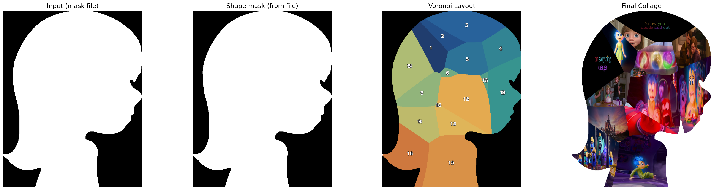
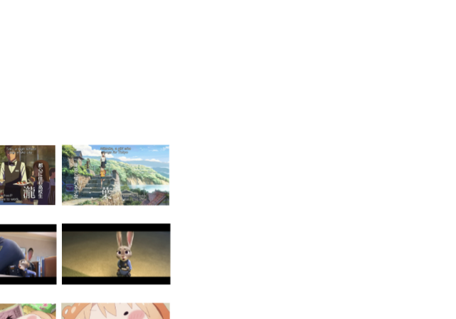
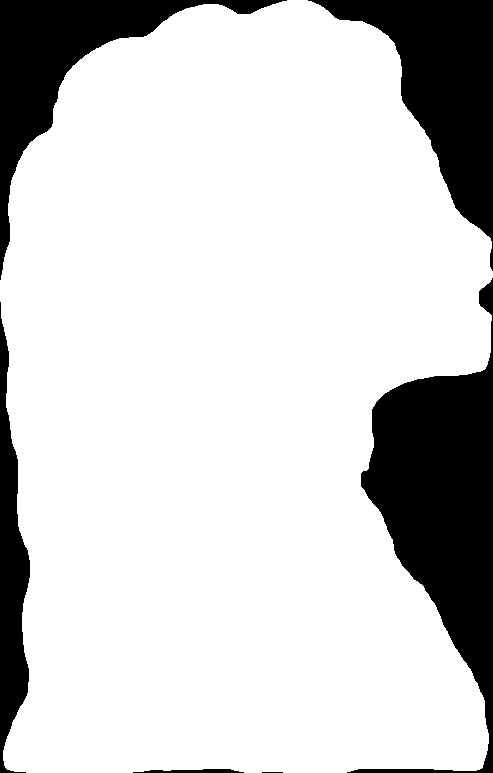
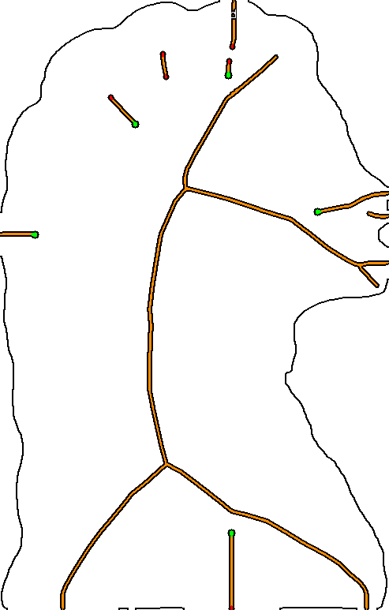
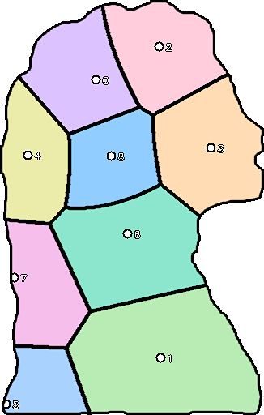
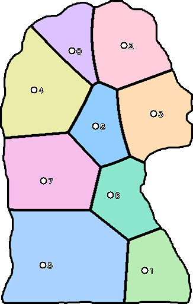
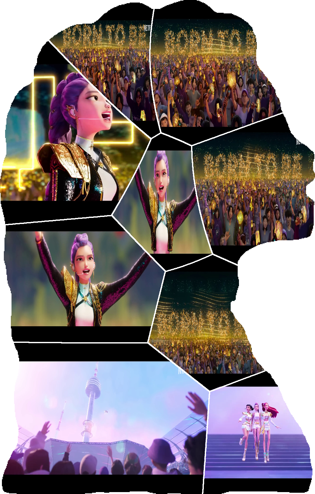

A coupled selection → abstraction → layout pipeline
Rather than optimizing selection, abstraction, and layout independently, we connect them through a single collage-oriented view of summarization. The framework unifies four stages.
Scene-aware structuring
TransNet V2 segments the video into semantically coherent scenes, with multi-parameter sampling for robustness to varied pacing.
MAPPS aesthetics
A multi-prompt CLIP-IQA module scores six anime attributes — sharpness, colorfulness, brightness, sakuga, cinematic, expression.
RL keyframe selection
A dual-head PPO policy with state-dependent gating balances narrative coverage and aesthetic saliency over the whole summary horizon.
Shape-aware layout
Foreground event supports are arranged inside an arbitrary silhouette via an event-aware Voronoi optimization with chronology-preserving rendering.
Pipeline overview. (I) Scene-aware temporal structuring with TransNet V2. (II) MAPPS computes anime-specific aesthetic attributes qt while a visual encoder extracts frame features vt. (III) The fused descriptor is processed by a shared Transformer + BiLSTM backbone; a dual-head policy with gating produces the fused policy πfused for selection under PPO. (IV) Selected keyframes become foreground event supports and are arranged via shape-constrained layout generation.

Evaluation data overview. Supplementary visual summary of the curated qualitative clips used for end-to-end analysis, covering animation, stylized, and out-of-domain video cases.

Event-aware shape-constrained layout
Video-derived keyframes impose a chronological constraint that generic collage / packing methods ignore. We formulate an Event-Aware Generative Layout: topology-aware site initialization (skeleton anchoring + distance-transform filling), gradient-based optimization of a weighted power-diagram (Voronoi) layout under core–shell priors and event-support constraints, and chronology-preserving composition via saliency-guided thin-plate-spline warping.
Layout construction. From the target mask we compute a medial axis, seed topology-aware sites, optimize an event-aware weighted Voronoi partition, and render keyframes into the optimized cells.





Controlled AIC + MPEG-7 evaluation data. Standard image collections and target shapes used for quantitative layout comparison in the paper and supplementary material.